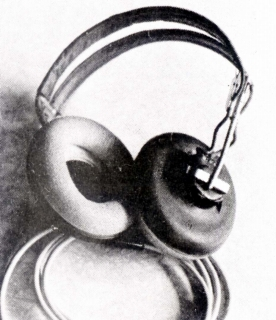
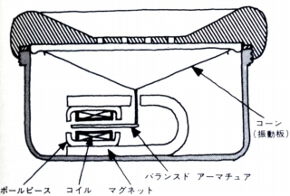
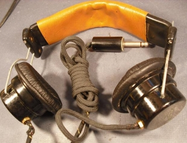
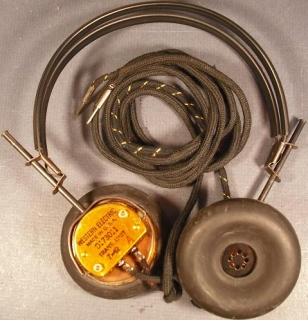

世界初？
中野の某ショプが開催した「ヘッドホン祭2009春」に、ある参加者の方が「BBC」の銘が入った古いヘッドフォンを持ち込んでいました。おそらくはラジオ等を聴くためものと思いますが、一応現在の標準プラグに換装されており、非常にか細い音でしたが、現在の機器に接続して音がでるものでした。このヘッドフォンを見て思い出したのが、故 高城重躬氏（＊1）や故 岡原勝氏（＊2）の文書です。
どちらも明治生まれの方で古い時代のオーディオに詳しいのですが、ヘッドフォンに関しての文書の中に、鉱石ラジオとそのレシーバーについて書いており、「BBC」の銘入りのヘッドフォンを見て、それを思い出しました。
ところで、両氏のヘッドフォンに関する文書で共通して登場するヘッドフォンに「パーモフラックス」社製のヘッドフォンがあります。高城氏の文書によれば、アメリカ軍放出の軍用ヘッドフォンらしいのですが、岡原氏の文書では最も古いダイナミック型ヘッドフォンとされていました。

（パーモフラックス ANB-H1A)
現在、一般的にはベイヤーのDT-48が世界初のダイナミックヘッドフォンとされることが多いようです。しかし本当でしょうか？1980年頃までのベイヤーのヘッドフォンに関する文書では、録音モニター用ヘッドフォンの原器としてDT-48には相応の敬意を示していますが、「世界初」との表現は全くでてきません。
ベイヤー関連の資料を見てみると、DT-48の扱いはだんだんエスカレートしているような気がします。
＊1973年 長瀬産業の広告
＊1977年頃 報映産業のパンフレット
＊1990年頃 松田通商時代のカタログ
＊2004年 タスカムのカタログ
＊2007年 タスカムのカタログ
1937年に「原型を完成」→「発表」→「発売」→ついには「発明」と変遷し、最近ではステレオヘッドフォンの世界初もベイヤーとなっています。以前はステレオヘッドフォンに関しては、コスが世界初となっていましたが、現在同じタスカム扱いとなり、そうした表現はされなくなりましたが・・・
＊1980年頃 サンスイ発行のパンフレット
別にベイヤーの伝統を否定するつもりはありませんが、「発明」とまでしてしまうといささかやりすぎと感じます。今回、このサイトの為の資料収集で国会図書館で古いオーディオ誌を見ましたが、オーディオに関する工夫の歴史は非常に古いものが多く、発音体としての歴史では、スタックスに代表されるコンデンサー型では1860年代、ヤマハのオルソダイナミック型に代表される動電全面駆動型についてでも1922年にさかのぼるそうです。最近カナル型ヘッドフォンで採用されているバランスド・アーマチュア型についても第二次大戦前にはすでに例があったようです。

ＣＤプレイヤー以降の高度に集積回路化されたものはともかく、それ以前ではハイ・アマチュアが独自に工夫してオーディオ界をリードした時代があったわけですから、ベイヤーの”発明”以前にダイナミック型を工夫したマニアがいたような気がしてなりません。またソナーが第一次大戦には実用化されていたことからみて軍用で開発されていた可能性もあるような・・・


（ウエスタン・エレクトリック製の軍用レシーバー）
どうも個人的には、「世界初のハイファイ（あるいはオーディオ用）ヘッドフォンの原型を開発」という表現が妥当な感じがします。
＊1 高城重躬
(たかじょう・しげみ)氏
1999年に87歳で亡くなったオーディオ評論家。高校教師の傍ら、50年近い間オーディオ・録音評論にたずさわった方です。オール･ホーンのスピーカーシステムを構築したことで知られていますが、そのシステム構築過程でバランス調整や音質評価の基準としてスタックスのコンデンサー型ヘッドフォン等を愛用されていました。その著作の中には、しばしばヘッドフォンに関するものが登場します。
＊2
岡原勝（おかはら・まさる）氏
1985年に亡くなったオーディオ評論家。戦前から沖電気で音響をやっていたエンジニア出身で、日本オーディオ協会の副会長まで務めた方です。古くからバイノーラルの研究にたずさわり、その関係からヘッドフォンについても造詣が深く、ヘッドフォン関連の文書が比較的多かった方です。音楽之友社編の「オーディオ基礎知識401」ではヘッドフォンを担当し、1978年のステレオサウンド社の「Hi-Fiヘッドフォンのすべて」では3名の評論家のなかで取りまとめ役をやっていました。1975年から本格的なヘッドフォンのイベント、「ヘッドフォンフェステバル」を３回開催しました。